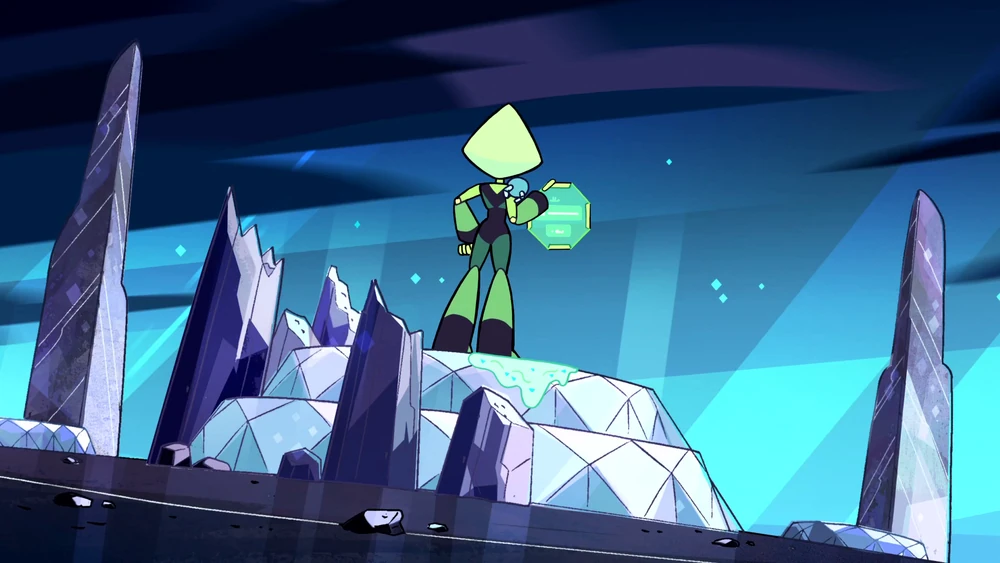

Primeira Aparição
Debut
Peridot aparece pela primeira vez no final do episódio 36 ("Warp Tour") utilizando o Homeworld Warp, após seus drones repararem o mesmo, ela então percebe um adesivo colocado por Steven, e assume que a área das Galaxy Warps foi comprometida, logo após isso ela ativa um EMP e utiliza a warp para voltar para Homeworld
Aparência
WIP